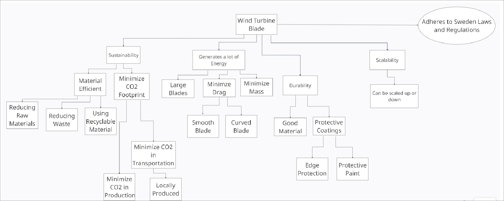
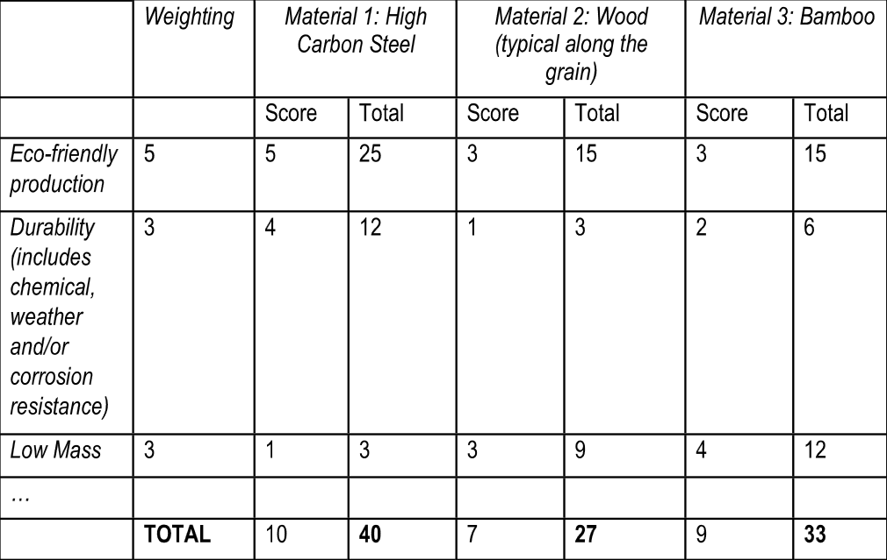
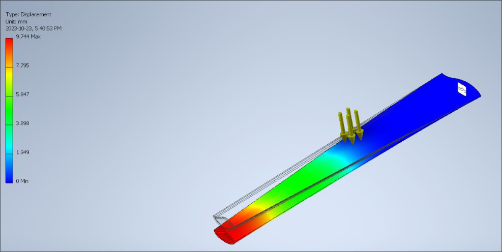

<< projects
A Pioneer in Clean Energy
Project Narratives & Objectives
This project revolved around the design of a wind turbine blade in relation to a certain scenario. Our group's scenario was "A Pioneer in Clean Energy"
which required us to design a wind turbine blade for Sweden. The main purpose of the turbine farm in this scenario was to create a long term plan which can
reduce Sweden's greenhouse gas emmisions to 0. Our group came up with the following main objectives:
- Should be sustainable. This means that the blade should be made out of "clean" materials while minimizing the carbon footprint. This would consider factors
such as transportation and production of the materials used.
- Generates sufficient energy to power cities. This would be optimized through the design of the blade.
- Durability. The materials used should be strong and able to stand for long periods of time, which would allow the farm to stay alive without breaking down.
The final objective tree is as follows:

Throughout this project, our team managed to learn and apply the overall engineering design process. We were able to assign roles to each other as well as
apply technical knowledge such as the usage of GRANTA and Autodesk Inventor to come up with a final deliverable. My role was that of a Subject Matter Expert (SME),
which required me to be familiar with all of the sources used throughout this project by all members on our team. Moreover, I had to ensure the reliability of the
sources used throughout this project. At the end of the project, I was one of two SMEs responsible for creating and submitting a Source Materials Database, which
was a full and comprehensive list of all the sources used throughout the project.
At the end of this project, we came up with a blade made of high carbon steel, through MPI analysis, and we decided on a blade thickness of 15mm which we found through
a deflection analysis on Autodesk Inventor.
Reflection
This project's main outcomes were the chosen material, which was high carbon steel, and the thickness of the blade, which was 9.744mm.
- The choice of high carbon is steel is related to our main objectives of durability and sustainability. We deemed through our research that high carbon steel
is a strong and durable material which would allow a blade to stand for a long time with minimum maintainence and/or replacement. While high carbon steel
is not the most greenhouse friendly in regards to its production, we deemed that it is a necessary trade for the sake of durability. Some other alternatives
for materials were wood and bamboo, both of which were more eco-friendly when it came to production, but performed a lot more poorly than high carbon steel
when it came to durability. Below is an image of our full weighted decision matrix which we used to choose our final material:

- The thickness of the blade was dependant on two main factors: maximum deflection and cost. Of course, a thicker blade would lead to a higher cost, which we want
to minimize, while having the blade within our maximum deflection, which we set to 10mm. The logical conclusion is that we should choose a thickness that just
beneath our maximum deflection. This is why we chose a thickness of 15mm which has a maximum deflection of 9.744mm. Looking back, while our process for choosing this
is correct for the purpose of looking at maximum deflection, other factors such as the amount of energy generated and such are also caused by the blade's thickness.
This means that we should have factored those aspects in and chosen a thickness that maximizes those as well. A picture of our autodesk simulation is posted below:

Skills
Throughout the course of this project, the main skill I developed was more familiarity with the engineering design process. This project served as more of an introduction
to the engineering design process, and for me, it was. That being said, I believe that this project also helped with developing my more technical skills, such as
MPI analysis, and Autodesk Inventor.